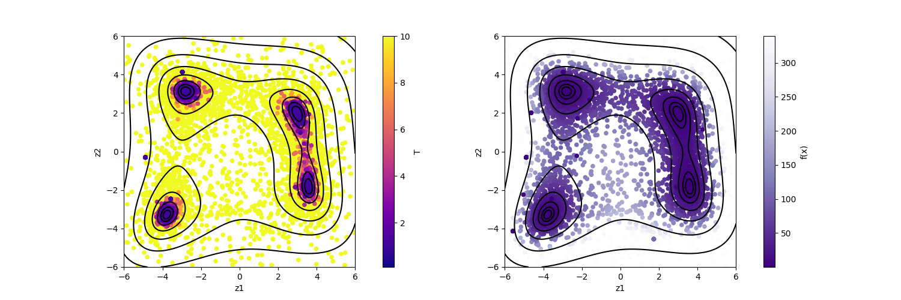

Search by population annealing#
This tutorial describes how to solve the optimization problem of the Himmelblau function by using the population annealing Monte Carlo method (PAMC).
Sample files#
Sample files are available from sample/analytical/pamc.
This directory includes the following files:
input.tomlThe input file of odatse
plot_result_2d.py,plot_result_2dmap.pyPrograms to visualize the results
do.shScript for running this tutorial
Input files#
This subsection describes the input file. For details, see the “Input file” chapter and Population Annealing Monte Carlo pamc.
[base]
dimension = 2
output_dir = "output"
[solver]
name = "analytical"
function_name = "himmelblau"
[runner]
[runner.log]
interval = 20
[algorithm]
name = "pamc"
seed = 12345
[algorithm.param]
max_list = [6.0, 6.0]
min_list = [-6.0, -6.0]
step_list = [0.1, 0.1]
[algorithm.pamc]
Tmin = 1.0
Tmax = 100.0
Tnum = 21
Tlogspace = true
numsteps_annealing = 100
nreplica_per_proc = 100
In the following, we will briefly describe this input file. For details, see the manual of Population Annealing Monte Carlo pamc.
The contents of [base], [solver], and [runner] sections are the same as those for the search by the Nelder-Mead method (minsearch).
[algorithm] section specifies the algorithm to use and its settings.
nameis the name of the algorithm you want to use. In this tutorial we will use the population annealing Monte Carlo (PAMC) algorithm, so specifypamc.seedis the seed that a pseudo-random number generator uses.
[algorithm.param] section sets the parameter space to be explored.
min_listis a lower bound andmax_listis an upper bound.step_listis the step length of one Monte Carlo update (standard deviation of the Gaussian distribution).
[algorithm.pamc] section sets the parameters for PAMC.
numsteps_annealingis the number of Monte Carlo steps between temperature decrements.Tmin,Tmaxare the minimum and the maximum of temperature, respectively. (Inverse temperature can be set instead withbmin/bmax.)Tnumis the number of temperature points.When
Tlogspaceistrue, the temperature points are distributed uniformly in the logarithmic space.nreplica_per_procis the number of replicas (MC walkers) in one MPI process.
Calculation#
First, move to the folder where the sample file is located. (Hereinafter, it is assumed that you are in the root directory of ODAT-SE.)
$ cd sample/analytical/pamc
Then, run the main program. It will take a few seconds on a normal PC.
$ mpiexec -np 4 odatse input.toml | tee log.txt
Here, the calculation is performed using MPI parallel with 4 processes.
If you are using Open MPI and you request more processes than the number of cores, add the --oversubscribe option to the mpiexec command.
When executed, a folder for each MPI rank will be created under the directory output, and trial_TXXX.txt files containing the parameters evaluated in each Monte Carlo step and the value of the objective function at each temperature (XXX is the index of the temperature points), and result_TXXX.txt files containing the parameters actually adopted will be created.
These files are concatenated into result.txt and trial.txt.
These files have the same format: the first two columns are time (step) and the index of walker in the process, the third is the (inverse) temperature, the fourth column is the value of the objective function, and the fifth and subsequent columns are the parameters. The final two columns are the weight of the walker (Neal-Jarzynski weight) and the index of the grand ancestor (the replica index at the beginning of the calculation).
# step walker T fx x1 x2 weight ancestor
0 0 100.0 187.94429125133564 5.155393113805774 -2.203493345018569 1.0 0
0 1 100.0 3.179380982615041 -3.7929742598748666 -3.5452766573635235 1.0 1
0 2 100.0 108.25464277273859 0.8127003489802398 1.1465364357510186 1.0 2
0 3 100.0 483.84183395038843 5.57417423682746 1.8381251624588506 1.0 3
0 4 100.0 0.43633134370869153 2.9868796504069426 1.8428384502208246 1.0 4
0 5 100.0 719.7992581349758 2.972577711255287 5.535680832873856 1.0 5
0 6 100.0 452.4691017123836 -5.899340424701358 -4.722667479627368 1.0 6
0 7 100.0 45.5355817998709 -2.4155554347674215 1.8769341969872393 1.0 7
0 8 100.0 330.7972369561986 3.717750630491217 4.466110964691396 1.0 8
0 9 100.0 552.0479484091458 5.575771168463163 2.684224163039442 1.0 9
0 10 100.0 32.20027165958588 1.7097039347500953 2.609443449748964 1.0 10
...
output/best_result.txt is filled with information about the parameter with the optimal objective function, the rank from which it was obtained, and the Monte Carlo step.
nprocs = 4
rank = 3
step = 1806
walker = 74
fx = 4.748689609377718e-06
x1 = -2.805353724219707
x2 = 3.131045687296453
Finally, output/fx.txt stores the statistics at each temperature point:
# $1: 1/T
# $2: mean of f(x)
# $3: standard error of f(x)
# $4: number of replicas
# $5: log(Z/Z0)
# $6: acceptance ratio
0.01 130.39908953806298 6.023477428315198 400 0.0 0.9378
0.01258925411794167 83.6274790817115 3.83620542622489 400 -0.2971072297035158 0.930325
0.015848931924611134 60.25390522675298 2.73578884504734 400 -0.5426399088244793 0.940375
0.01995262314968879 47.20146188151557 2.3479083531465976 400 -0.7680892360649545 0.93715
0.025118864315095794 41.118822390166315 1.8214854089575818 400 -0.9862114670289625 0.9153
...
The first column is the inverse temperature, and the second/third ones are the mean and standard error of \(f(x)\), respectively. The fourth column is the number of replicas and the fifth one is the logarithm of the ratio of the partition functions, \(\log(Z_n/Z_0)\), where \(Z_0\) is the partition function at the first temperature. The sixth column is the acceptance ratio of MC updates.
Visualization#
By visualizing result_T%.txt, you can estimate regions where the function values become small.
By executing the following command, the figures of the two-dimensional parameter space res_T%.png will be generated, where % stands for the index of the temperature point.
The symbol color corresponds to the function value.
$ python3 plot_result_2dmap.py
It is seen from the figures that the samples are concentrated near the minima of f(x) where the objective function has a small value.

Fig. 8 Plot of sampled parameters. The horizontal axis denotes x1, the vertical axis denotes x2, and the color represents the value of T (left) and f(x) (right), respectively.#
See also
The PAMC outputs can be further analyzed, e.g., computing the model evidence and making histograms of the posterior probability distributions. See Post-Processing Tools for the analysis workflow using the post-processing tools.